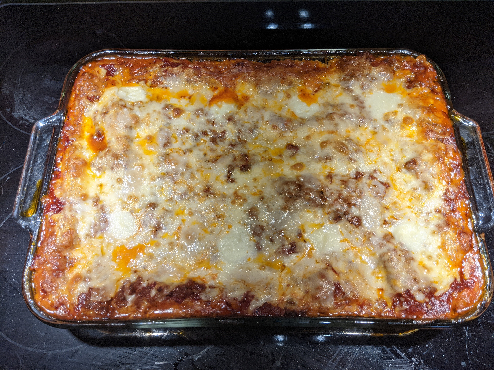

Return to recipe index
Description
When John Chandler submitted this lasagna recipe to us more than 20 years ago, he had no idea how successful it would become. One of our top-preforming recipes of all time, World's Best Lasagna racks up more than 7 million views per year and has ranked among the most popular lasagna recipes on the internet for two decades
Ingredients
Meat: This super meaty lasagna has sweet italian sausage and lean ground beef.
Onion and garlic:An onion and two cloves of garlic are cooked with the meat to add tons of flavor.
Tomato products:You'll need a can of crushed tomatoes, who cans of tomato sauce, and two cans of tomato paste.
Sugar:two tablespoons of white sugar add subtle sweetness and enhance the flavor of the sauce.
Spices and seasonings:this lasagna recipe is flavored with fresh parsley,dried basil leaves,salt,italian seasoning,fennel seeds,and black pepper.
Cheeses: Parmesan, mozzarella, and ricotta cheese make this lasagna exstra decadent.
Egg:An egg helps bind the ricotta so it doesn't ooze out of the lasagna when you cut into it.
How to Make Lasagna Step-By-Step
Here's a very brief overview of what you can expect when you make homemade lasagna:
- Make the meat sauce
- Cook the noodles.
- Make the ricotta mixture
- Layer the lasagna according to the recipe instructions
- Cover with foil and bake
- Let the lasagna rest before serving.
How to Layer Lasagna
The detailed layering instructions can be found in the recipe below, but this is the order you'll follow
- Meat sauce
- Noodles
- Ricotta mixture
- Mozzarella slices
- Parmesan cheese
- Repeat the layers, then top with the remaining Parmesan.